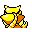

#063
Abra
Psychic
Using its ability to read minds, it will identify impending danger and TELEPORT to safety
Base stats Total 255
HP25
Attack20
Defense15
Speed90
Special105
Details
- Species
- Psi
- Height
- 2'11"
- Weight
- 43.0 lb
- Catch rate
- 200
- Base exp
- 73
- Growth
- Medium Slow
Level-up moves
LevelMoveType
StartTeleportPsychic
Lv 17ConfusionPsychic
Lv 25PsybeamPsychic
Lv 38PsychicPsychic
Lv 41Dream EaterPsychic
TM / HM
TM01 Mega PunchTM05 Mega KickTM06 ToxicTM07 Shadow BallTM08 Body SlamTM09 Take DownTM10 Double-EdgeTM17 SubmissionTM18 CounterTM19 Seismic TossTM29 PsychicTM30 TeleportTM31 MimicTM32 Double TeamTM33 ReflectTM34 BideTM35 MetronomeTM39 SwiftTM42 Dream EaterTM44 RestTM45 Thunder WaveTM46 PsywaveTM49 Tri AttackTM50 SubstituteHM05 Flash